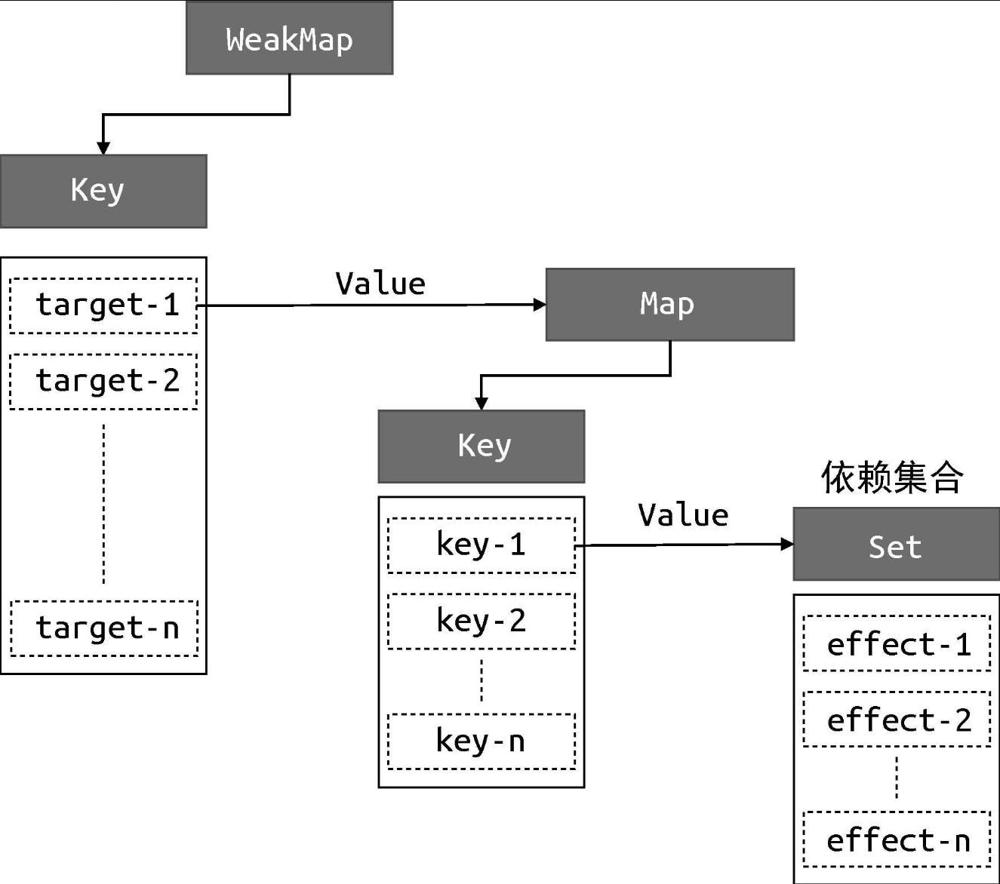

<body>
  <title></title>
  <h3>weakMap、map与set的关系</h3>
  
</body>
<script>


// 存储副作用函数的桶，使用WeakMap数据结构
const bucket = new WeakMap()

// 原始数据
const data = { text: 'hello world' }
// 对原始数据的代理
const obj = new Proxy(data, {
  // 拦截读取操作
  get(target, key) {
    // 没有activeEffect，直接return
    if (!activeEffect) return target[key]

    // 根据target从“桶”中取得depsMap，它是一个Map类型：key --> effects
    let depsMap = bucket.get(target)

    // 如果不存在depsMap。那么新建一个Map并于target关联
    if (!depsMap) {
      bucket.set(target, (depsMap = new Map()))
    }
    // 再根据key从depsMap中取得deps，它是一个Set类型
    // 里面存储着所有当前key相关联的副作用函数：effects
    let deps = depsMap.get(key)

    // 如果不存在。同样新建一个Set并于key关联
    if (!deps) {
      depsMap.set(key, (deps = new Set()))
    }

    // 最后将当前激活的副作用函数添加到“桶”里
    deps.add(activeEffect)

    // 返回属性值
    return target[key]
  },
  // 拦截设置操作
  set(target, key, newVal) {
    // 设置属性值
    target[key] = newVal
    // 根据target从“桶”中取得depsMap，它是：key --> effect
    const depsMap = bucket.get(target)
    if (!depsMap) return
    // 根据key取得所有副作用函数 effects
    const effects = depsMap.get(key)
    // 执行副作用函数
    effects && effects.forEach(fn => fn())
  }
})


// 用一个全局变量存储当前激活的 effect 函数
let activeEffect
function effect(fn) {
  // 当调用 effect 注册副作用函数时，将副作用函数复制给 activeEffect
  activeEffect = fn
  // 执行副作用函数
  fn()
}

effect(() => {ß
  document.title = obj.text
})

setTimeout(() => {
  obj.text = 'hello vue3'
}, 1000)
/**
 * WeakMap对key是弱引用，不影响垃圾回收的工作，
 * 如果使用Map来代替WeakMap，那么即使用户侧的代码对target没有任何引用，这个target也不会被回收，最终可能导致内存泄露。
*/
</script>